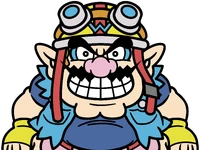
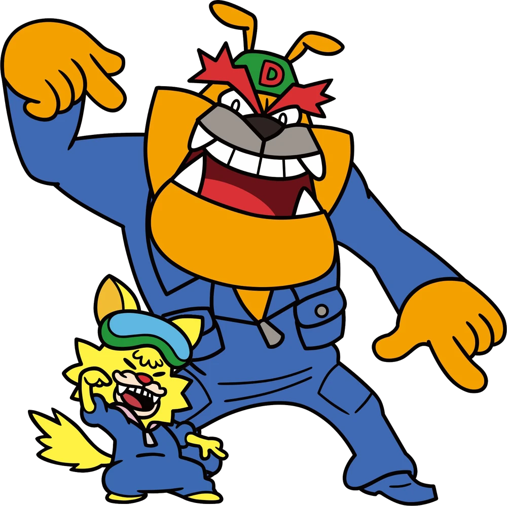
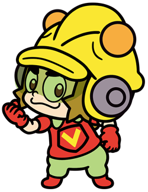
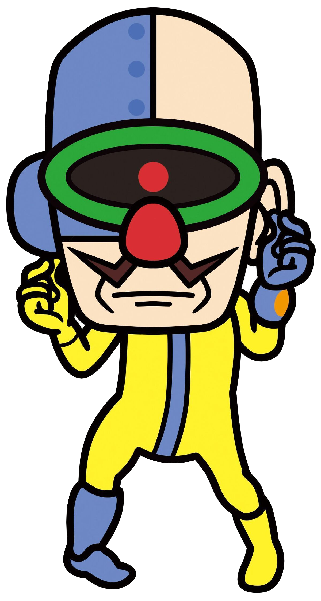
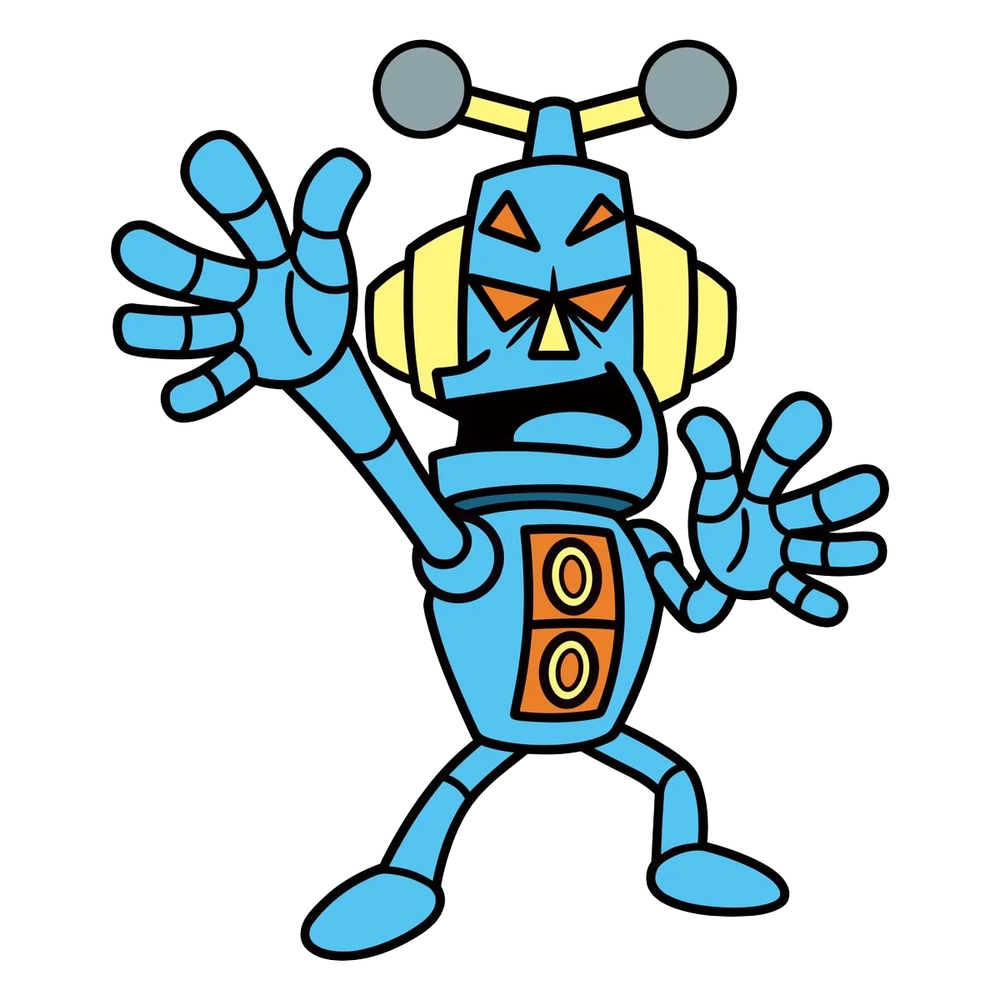
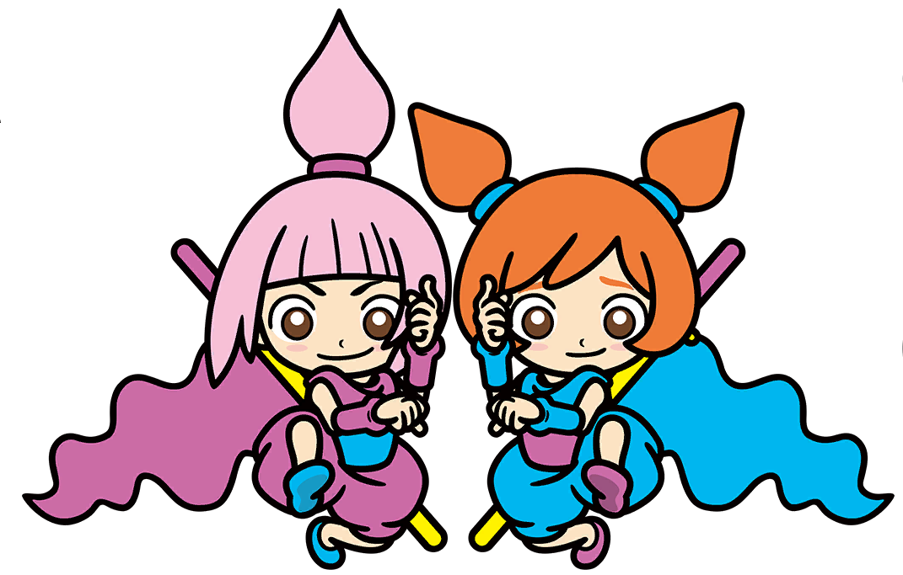
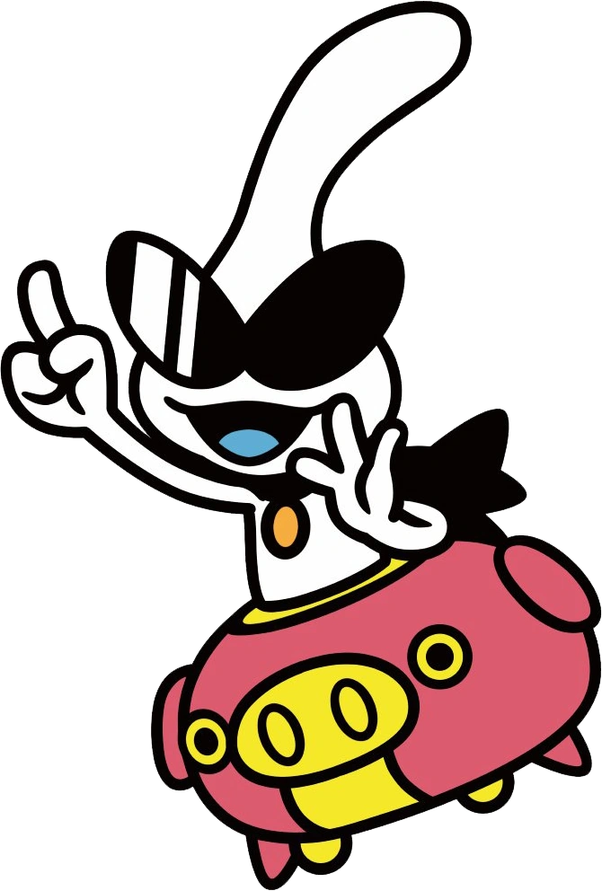
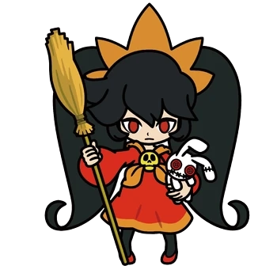
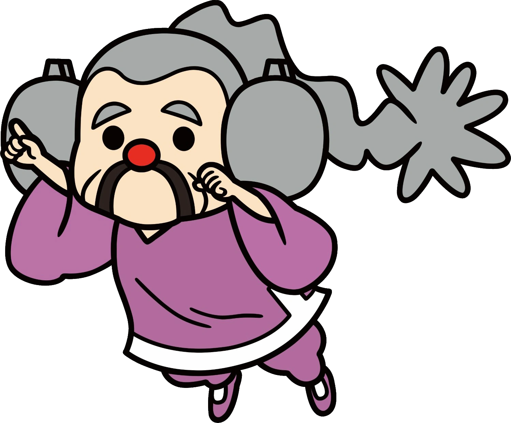

|
Wario
|
|
This video-game maker loves treasure, money, and garlic. And money. What could possibly go wrong? |
Young Cricket |
|
This devoted student of the martial arts diligently trains under Master Mantis. He likes meat dumplings. A lot. |
18-Volt |
|
This overgrown school kid has mad rapping and retro-gaming skills. He loves to play with the print-size pal 9-Volt. |
Mona |
|
Work, school, and pets keep this high-school student busy. She's also a big fan of Wario. Why? Who can say? |
Dribble & Spitz |
|
This taxi-drivin' duo is happy to take you from your front door to the far reaches of space. The fare is always fair! |
9-Volt |
|
This skateboarding school kid is obsessed with Nintendo and has some serious DJing and yo-yo skills. |
Dr. Crygor |
|
This genius scientist is so good at making mechanical marvels, he made a cyborg out of himself! |
Mike |
|
Invented by Dr. Crygor, this karaoke robot has a great love of singing. He does not have great skills at singing. |
Kat & Ana |
|
These kindergartners are not only twins... they're ninjas too! Kat is a tiny bit older than Ana, obviously. |
 Jimmy T. |
|
Whether he's hitting the dance floor or the gym, this sports-lovin' disco king has all the right moves. |
Orbulon |
|
This alien insists he'll invade Earth...one day. He's lived here long enough to know a lot about our culture. |
|
Ashley
|
|
Dislikes: Cute stuff, expressing emotions, unnecessary chitchat.
Likes: Casting spells, food, her pal Red. |
5-Volt |
|
Mother to 9-Volt, she's as sweet as can be... until she gets mad. Her out-of-body anger is positively shocking! |
Red |
Siehe Ashley |
Sometimes he seems to be more scarendy-cat than demon. Still, Red takes good care of his fave witch, Ashly. |
Master Mantis |
Siehe Young Cricket |
A master of material arts and Cricket's teacher, he is said to be very strong...though non one has seen him fight. |
Lulu |
Gibt keine Musik |
This Luxeville kid is as pesky as she is plucky. She's an adoring fan of Cricket (whether he likes it or not). |
Penny |
Andere Version, da sich die Lyrics beim Machen eines Fehlers unterscheiden. |
This budding scientist and granddaughter to Dr. Crygor loves two things: inventing stuff and singing pop songs! |
Pyoro |
Gibt keine Musik |
The beak! The tongue! The legend! The star of Diamond City's hottest game couldn't resist Wario's game, it seems. |